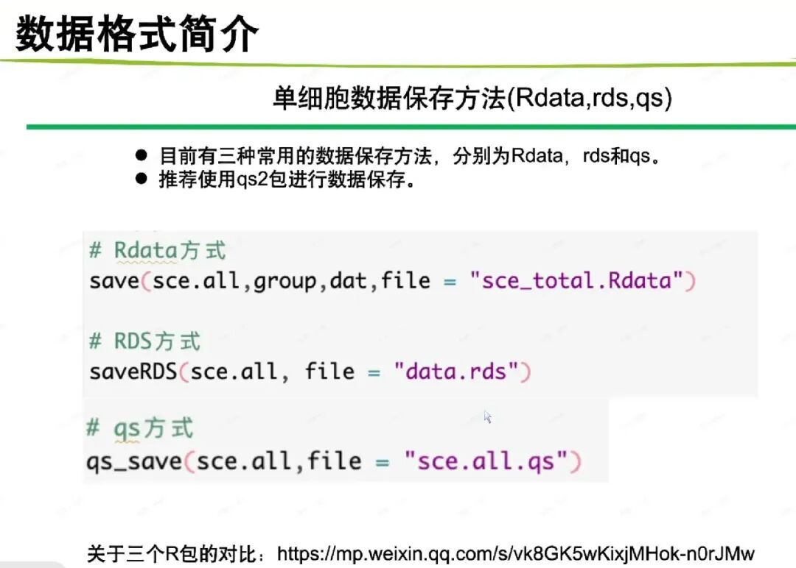
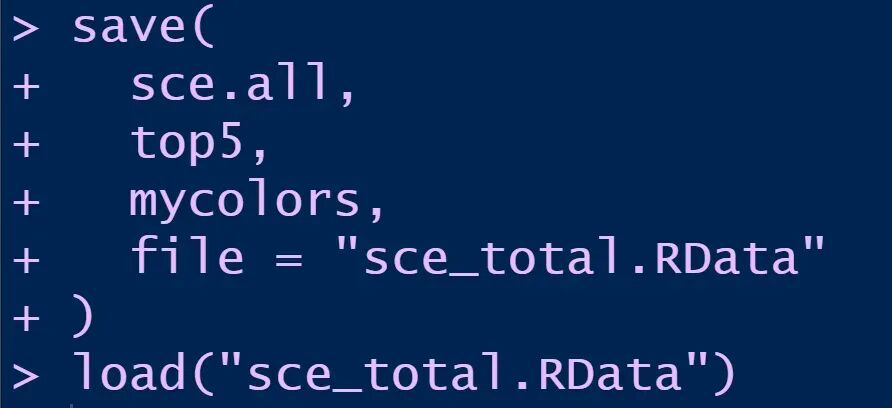
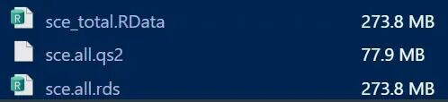

摘要LLM 归库摘要
- 核心内容： 对比 R 语言保存单细胞对象的三种序列化格式：.RData/.rda 可一次保存多个带名称对象；.rds 保存单个对象且读取时返回变量；.qs2 是 qs 后继格式，读写更快但需安装 qs2 包。文章逐项列出优缺点和实际选择建议。
- 适用场景： Seurat、SingleCellExperiment 等复杂 R 对象的保存、加载、分享；频繁读写大型单细胞对象的分析流程。
- 输入： 内存中的 R 对象（Seurat 对象、列表、矩阵等）。
- 输出： .RData、.rds 或 .qs2 文件及对应读取方法。
- 关键参数： save()/load()、saveRDS()/readRDS()、qs_save()/qs_read()；qs2 可通过 qs_to_rds() 转回 RDS。
- 常见错误： load() 会直接覆盖同名变量；旧 qs 与 qs2 格式不兼容；共享文件给他人前需确认目标环境已安装 qs2。
- 口腔生信连接： 牙周组织、口腔黏膜免疫细胞等单细胞对象可先以 .rds 保存，若对象很大且频繁读写，再测试 .qs2 的速度和体积收益。
- 下一步处理： 用自有单细胞对象实测三种格式的读写耗时和文件大小，记录结果后决定项目默认格式。
- 归库说明： 微信公众号「谢大飞」教程，无 DOI/PMID，含 R 代码，归入生信教程 methods。
写在开头#
上周末在长沙参与了 暑期特训长沙站：Codex赋能单细胞+空间转录组线下培训班来袭！ ,在单细胞课程中，学习到了同事分享的三种单细胞数据保存方法。

这三种方式本质上都是将 R 内存中的对象序列化后保存到磁盘，以便在之后的分析中重新读取。它们与 CSV、TSV 这类通用表格格式不同，主要面向 R 对象，可以保存矩阵、列表、因子、稀疏矩阵，以及 Seurat、SingleCellExperiment 等结构复杂的对象。
平时做单细胞分析时，我用得最多的是 RDS，另外两种方式接触得相对少一些。正好借着这次课程，把三种格式放在一起梳理一下，看看它们分别适合什么场景。
.RData / .rda格式#
.RData和.rda是同一种格式，只是扩展名习惯不同。它们通过save()保存，通过load()读取。最大的特点是：一个文件可以同时保存多个带名称的 R 对象。
例如：
save( sce.all, top5, mycolors, file = "sce_total.RData")
这里保存了三个对象：
- sce.all
- top5
- mycolors
读取时：
load("sce_total.RData")

优点
（1）可以一次保存多个对象：例如单细胞分析中，可以把表达对象、分组信息和差异分析结果一起保存；
（2）对象名称也会被保存：不需要读取时重新指定名称，原来叫sce.all的对象，加载后仍然叫sce.all。
（3）不需要安装额外软件包，在绝大多数 R 环境中都可以直接使用。
缺点
（1）load()会直接向环境中创建对象，如果文件里也有一个sce.all，当前对象可能被直接覆盖。
（2）代码的可读性和数据流不够明确，无法立即知道接下来产生了哪些对象。
（3）多个对象保存在同一个文件中时，不方便独立管理。即使只需要其中一个对象，通常也要先加载整个文件。
.rds格式#
RDS 使用saveRDS()保存一个对象，使用readRDS()读取。
例如：
saveRDS( sce.all, file = "sce.all.rds")
读取：
sce.all <- readRDS("sce.all.rds")
RDS 文件一次保存的是一个 R 对象。但这个对象本身可以是复杂列表，所以仍然可以间接保存多个内容。
例如：
result <- list( sce = sce.all, group = group, dat = dat)saveRDS(result, "analysis_result.rds")
读取：
result <- readRDS("analysis_result.rds")sce.all <- result$scegroup <- result$groupdat <- result$dat
优点
（1）读取时不会自动污染当前环境，文件内容只会作为函数返回值出现，不会悄悄在工作区生成多个变量。
（2）可以自由决定读取后的对象名称，文件内部不绑定变量名称，更灵活。
（3）无需安装额外软件包，saveRDS()和readRDS()都属于 base R。
（4）通用性和长期可读性通常较好，由于它是 R 官方基础序列化格式，在不同服务器或不同项目之间传递时，通常不需要先安装专门的序列化包。
缺点
（1）一个文件直接保存一个顶层对象，如果要保存多个内容，需要先组织成列表。
（2）对于体积较大的单细胞对象，RDS 的保存和读取可能比较耗时。实际速度与对象结构、压缩方式、CPU 性能和磁盘读写速度有关，因此不能简单地认为 RDS 在所有场景下都更慢。
qs2格式#
新的 qs2 包#
qs2是qs的后继项目。需要注意的是，旧版qs和新版qs2使用的文件格式并不兼容，因此建议分别使用.qs和.qs2扩展名进行区分。本文主要介绍新的qs2。
安装：
install.packages("qs2")
保存：
library(qs2)qs_save(sce.all, "sce.all.qs2")
读取：
sce.all <- qs_read("sce.all.qs2")
优点
（1）通常面向更快的读写性能设计，对于大型单细胞对象，尤其是大矩阵、列表和复杂对象，通常值得测试。
（2）在部分大型对象上，.qs2可以在读写速度和文件大小之间取得较好的平衡。不过，文件是否比 RDS 更小取决于对象结构和压缩参数，不能一概而论。
以我这次使用的单细胞对象为例，.qs2文件比对应的.rds文件更小。不过，这只是当前数据上的结果，不同对象的测试结果可能不同。

（3）可以与 RDS 转换，由于.qs2使用 R 序列化机制，可以转换成 RDS：
qs2::qs_to_rds( input_file = "sce.all.qs2", output_file = "sce.all.rds")
转换完成后：
sce.all <- readRDS("sce.all.rds")
缺点
（1）依赖额外的软件包，读取前必须安装：install.packages("qs2")，而.RData和.rds不需要第三方包。
（2）不适合把文件交给没有qs2的环境，如果将文件发送给其他人，对方必须知道这是.qs2，并安装匹配的软件包。
（3）旧qs和新qs2的文件格式不兼容，不能把旧.qs文件直接当成.qs2文件读取，也不能只修改扩展名完成转换。
实际分析中该怎么选？#
- 如果只保存一个 Seurat 或 SingleCellExperiment 对象，我通常还是优先使用 RDS，它的优点是代码清楚、依赖少，文件发给别人后也更容易读取。
- 如果对象很大，而且分析过程中需要频繁保存和读取，可以测试一下 .qs2。
- .RData，它更适合一次保存多个相关对象，或者临时保留某个分析阶段的工作现场。不过，读取时要注意同名对象被覆盖的问题。